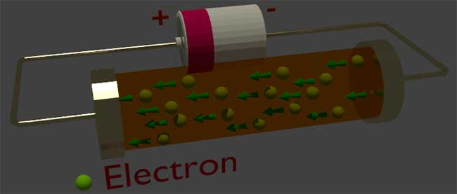
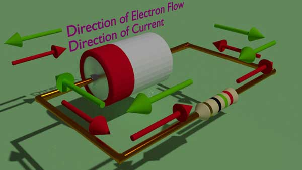
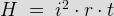
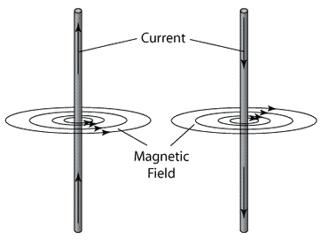

Definition
Theory of Electricity
Measurement of Current
Conventional Flow of Current
Types of Current
Alternating Current
Conventional Direction of Alternating Current
Effects of Electric Current
Heating Effect
Applications of Heating Effect of Current
Magnetic Effect
Magnetic Field due to Current
Cork Screw Rule
Right Hand Rule
Magnetic Flux Density Due to Current
What is Electric Current?
Electric current is nothing but the rate of flow of electric charge through a conductor with respect to time. It is caused by drift of free electrons through a conductor to a particular direction. As we all know, the measuring unit of electric change is Coulomb and the unit of time is second, the measuring unit of electric current is Coulombs per second and this logical unit of current has a specific name Ampere after the famous French scientist André-Marie Ampere.
If total Q Coulomb charge passes through a conductor by time t, then electric current I = Q / t coulomb par second or Ampere.
For better understanding, let give an example, suppose total 100 coulombs of charge is transferred through a conductor in 50 seconds. What is the electric current?
As the electric current is nothing but the rate at which charge is transferred per unit of time, it would be ratio of total charge transferred to the required time for that. Hence, here electric current I = 100 coulombs / 50 second = 2 Amperes.
'Ampere' is Sl unit of current.
Definition of Electric Current
While a potential difference is applied across a conductor, electrical charge flows through it and electrical electric current is the measure of the quantity of the electrical charge flowing through the conductor per unit time.
Theory of Electricity
There is an equal number of electrons and protons in an atom. Hence, atom is in general electrically neutral. As the protons in the central nucleus are positive in charge and electrons orbiting the nucleus, are negative in charge, there will be an attraction force acts between the electrons and protons. In an atom various electrons arrange themselves in different orbiting shells situated at different distances from the nucleus.
Figure-1
The force is more active to the electrons nearer to the nucleus, than to the electrons situated at outer shell of the atom. One or more of these loosely bonded electrons may be detached from the atom. The atoms with lack of electrons are called ions. Due to lack of electrons, compared to number of protons, the said ion becomes positively charged. Hence, this ion is referred as positive ion and because of positive electrical charge; this ion can attract other electrons from outside. The electron, which was previously detached from any other atom, may occupy the outer most shell of this ion and hence this ion again becomes neutral atom. The electrons which move from atom to atom in random manner are called free elections. When a voltage is applied across a conductor, due to presence of electric field, the free electrons start drifting to a particular direction according the direction of voltage and electric field. This phenomenon causes electric current in the conductor. The movement of electrons, means movement of negative charge and rate of this charge transfer with respect to time is known as electric current.

The amount of negative electric charge in an electron is 1.602 X 10-19 Coulomb. Hence, one coulomb negative electric charge consists of 1/1.602 X 10 -19 = 6.24 X 10 18 number of electrons. Hence, during drift of electron to a particular direction, if 6.24 X 10 18 number of electrons cross a specific cross-section of the conductor, in one second, the electric current is said to be one ampere. Since, we have already seen the unit of electric current, ampere is coulomb/second.
Video Presentation on Theory of Electric Current
Measurement of Current
The most common method of measuring electric current is to connect an ammeter in series with the circuit that’s electric current to be measured. This is so because; the entire electric current flowing through the circuit must also flow through the ammeter also. The ideal internal resistance or impedance of an ammeter is zero. Hence, ideally there is no voltage drop across the ammeter connected in the circuit. A conventional analog ammeter consists of a electric current coil. Whenever electric current flows through this coil, it deflects from its position depending upon the amount of electric current flowing through it. A pointer is attached to the coil assembly; hence it points the electric current reading on the dial of the ammeter. For measuring alternating current, clip on meter or tong tester can also be used instead of conventional ammeter. In this ammeter a current transformer core is attached to the meter which can easily be clipped on the live electric current carrying conductor. Due to this arrangement, electric current in the circuit transforms to the secondary of the CT and this secondary electric current then measured on the dial of clip on meter without disturbing the continuity of the electric current unlike conventional ammeter.
Conventional Flow of Current Vs Electrons Flow

In the early days, it was thought that the electric current is, flow of positive charge and hence electric current always comes out from the positive terminal of the battery, passing through the external circuit and enters in the negative terminal of the battery. This is called conventional flow of current. On the basis of this conception, all the theories of electricity, formulas, and symbols were developed. After the development of atomic nature of matter, we have come to know, that actual cause of electric current in a conductor is due to movement of free electrons and electrons have negative change. Due to negative charge, electrons move from the negative terminal to the positive terminal of the battery through the external circuit. So the conventional flow of current is always in the opposite direction of electrons flow. But it was impossible to change all the previously discovered subsequent rules, conventions, theories and formulas according to the direction of electrons flow in the conductor. Thus the concept of conventional electric current flow was adopted. The true electron flow is used only when it is necessary to explain certain effects (as in semiconductor devices such as diodes and transistors). Whenever we consider the basic electrical circuits and devices, we use conventional flow of electric current i.e. electric current flowing around the circuit from the positive terminal to the negative terminal.
Video on Conventional Current Flow
Types of Current
There are only two types of electrical current, direct electric current and alternating current.
We abbreviate them as DC and AC respectively. Concept of DC was developed before AC. But AC becomes most popular means of generating, transmitting and distributing of electric power. The direction of the flow of direct electric current is unidirectional, means this electric current does not alter its direction during flowing. Most common examples of DC in our daily life, are the electric current that we get from all kinds of battery system. But most popular form of electrical electric current is alternating electric current or AC. AC does have some advantages over DC for generating, transmitting and distributing and that is why the electric current we get from our electric supply companies, is normally alternating current.
Alternating Current
The electric current whose flow is not unidirectional moreover it alternates at a frequency, is called alternating current. In other words, the direction of the electric current continuously changes from forward to backward and then backward to forward in the circuit. The number of times, this direction changes from forward to backward or from backward to forward per second, is referred as frequency of the current. The electric current produced in an alternator is always an alternating current. The shape of the waveform of an alternating electric current is usually sinusoidal. But square, triangular and other types of waveform are also available for attending current.
Conventional Direction of Alternating Current
As direct current, alternating electric current is denoted with arrow. An AC has both forward and backward direction of flow. The arrow head always indicates the forward direction of the current. In different point of view, when the electric current has a positive valve, the direction of electric current is same as the reference arrow and when the electric current gets negative value; its direction is just opposite of the reference arrow.
Effects of Electric Current
There are mainly two effects of electric current, such as heating effect and magnetic effect. Each and every utilization of electricity, we see in our daily life, is either due to heating effect or due to magnetic effect of electric current. For examples, the light bulb glows in our house is due to heating effect of electric current and the fan rotates in our house is due to magnetic effect of electric current. There are thousands of other examples which can illustrate the effect of electric current, too.
Heating Effect of Electric Current
Whenever electric current passes through a conductor there would be a generation of heat due to ohmic loss in the conductor. This is commonly known as heating effect of electric current.
Since, we cannot use electric power directly, we need to convert it into another usable power, like heat, light, or mechanical power etc. When electric current flows through a conductor some loss occurs and this loss is almost inevitable, and more the resistance of the conductor, more the loss. This loss due to the electrical resistance of conductor is mainly responsible for the heating effect of electric current.
As some electric power is converted into heat energy, this phenomenon can be described by Joule's law, which states that,

Where H is the generated heat in calories, i
is the electric current that is flowing through the wire and it is measured in amperes, r
is the resistance of the conductor in ohm(Ω) and t
is the duration of electric current flowing in seconds. If we know the time of electric current flowing, the resistance of wire, and amount of electric current flow, we can easily find out the generated heat of the circuit. This heat can be utilized in various ways.
We saw that the more the electrical resistance of the wire the more the generated heat in the circuit, but to know more accurately about the heating effect of current, we should know about it from the atomic level. As the flow of electric current is nothing but the flow of electrons there will always be resistance from the fixed atoms of the conductor. The fixed atoms of the wire resist the flow of electrons and as a result there are collisions and as the kinetic energy converts into heat energy we see that the wire is getting hot.
Applications of Heating Effect of Electric Current
Now, the generated heat can be viewed from many points of angles. Sometimes, it is only seen as a loss and is trying to be minimized. Various steps are taken to minimize heat dissipation from the conductor. But we can see many positive applications of heating effect of electric current in our daily life. Electric iron, the whole idea or working principle depends upon the heating effect of electric current. High resistant wire is used as the main coil in the electric iron when electric current flows through the coil, the coil gets heated and the iron works. But what about over heating of electric iron? This problem can be solved by using bimetallic conductors. Bimetallic plates made of two different metals are used in the circuit. As expansion co-efficient of heat is different for two metals, so due to heating effect one metal's expansion is different from the other metal; as a result the plate is bent and after reaching at a certain temperature the contact of the circuit is broken and electric current flowing through the coil is stopped and the electric iron too is not heated any more.
The same mechanism is used in electric heater, the only difference is that there is no bimetallic plate or circuit breaker involved.
Another application of heating effect of current is seen in electric bulbs. The wire which is used inside the bulb gets illuminated and emits light after reaching certain temperature. The metal used in the bulb is mainly made of tungsten.
Finally and perhaps the most important application of the heating effect of electric current is in electrical fuses, that are used in almost everywhere. From huge industries to domestic level, everywhere electrical fuse is a must. The fuse is made of such metals which has a certain melting point. They are okay for normal electric current but when over electric current flows through the circuit; the generated heat in the fuse wire is enough to melt the metal portion of the fuse wire and break the circuit. In this way the costly equipment is protected as huge electric current flow, can damage the equipment permanently.
Magnetic Effects of Electric Current
Magnetic Field due to Current Carrying Conductor
In 1819, it was discovered by a Danish Physicist, Hans Christian Oersted that an electric current is always accomplished by certain magnetic effect. He observed a electric current carrying conductor when placed near a magnetic needle; the needle deflects to a certain direction. He also observed that when the direction of electric current in the conductor is reversed, the needle deflects in opposite direction.
That means there is a magnetic field due to electric current carrying conductor. Further investigation shows that, the magnetic field around the conductor consists of a number of concentric closed lines of force. If we pass an electric current through a conductor through a card board as shown in the figure and try to plot the field with the help of a magnetic needle on that card board, we shall get the magnetic lines as shown in figure. These are all closed circles and concentric with the conductor. Now if we reverse the electric current in the conductor and repeat the same experiment as shown in the figure, we shall get the oppositely directed closed circular magnetic lines, concentric with the conductor as shown.

From the above experiment it is also found that when electric current flows through the conductor in upward direction, the direction of circular magnetic lines are anti clockwise if we observe from the top. On the other hand; if the electric current flows through the conductor in downward direction, the circular magnetic lines are clockwise if we observe from the top.
Properties of magnetic field due to a electric current carrying conductor can be summarized as below,
- All lines of magnetic field are circular in shape, symmetrical to each other and concentric with the axis of electric current carrying conductor.
- The radius of the lines of force increases as we go away from the axis of the conductor.
- The direction of magnetic circular line depends upon the direction of flow of electric current through the conductor.
- The magnetic flux density of the induced magnetic field around the conductor increases if the electric current flowing through the conductor is increased and it decreases if the electric current is decreased.
Determination of Direction of magnetic field around a Current Carrying Conductor.
There are mainly two popular rules for determining the direction of magnetic field due to a electric current carrying conductor and these are Cork screw rule and Right hand rule.
Cork Screw Rule
Cork Screw Rule
If the right handed cork screw is held with its axis parallel to the conductor pointing the direction of flow of electric current and the head of the screw is rotated in such a direction that the screw moves in the direction of flow of electric current , then the direction in which the head of screw is rotated, will be the direction of magnetic lines of force.
Right Hand Rule
Right Hand Rule
If the electric current carrying conductor is held in right hand by the observer so that it is encircled by fingers stretching the thumb at right to the fingers in the direction of flow of electric current then finger tips will point the direction of magnetic lines of force.
Magnetic Flux Density Due to a Current Carrying Conductor
Whenever a electric current passes through a conductor, a magnetic field is appeared surrounding it. The direction of this magnetic field of electric current carrying conductor can be determined by Cork Screw rule or Right Hand rule.
As per Biot Savart’s law, the expression of magnetic flux density at a point P nearer to a conductor carrying a electric current ‘I’ is given as,
Where, dB is the infinitesimal flux density at point P.
Current I is passing through the conductor.
dl is infinitesimal length of conductor.
r is the radius vector from center of element dl to point P.
θ is the angle between electric current and radius vector.
Flux Density due to Current Carrying Conductor
Now in order to find the actual magnetic flux density B at the point P due to total length of the conductor, we have to integrate the expression of dB, in respect of dl.
The above expression is used to evaluate magnetic flux density B at any point due to infinitely long linear conductor and this comes as
Here, R is the radial distance from conductor to the point P.
Now if we integrate B around a path of radius R enclosing the electric current carrying conductor, we get
Ampere's Law
This equation shows that the integral of H around a closed path is equal to the current enclosed by the path. This is nothing but Ampere’s law. If the path of integration enclosed N number of turns of wire, each with a electric current I in the same direction, then

This relation is very important relation; it is used for determining flux linkage of a system of conductors. From flux linkage, the inductor of the system can easily be determined.
If the electric current in the conductor varies, it causes variation of flux linkage. We know that change of flux linkage induces a voltage in the conductors and the rate of change of flux linkage is directly proportional to the induced voltage. This is known as Faraday’s laws of electromagnetic induction.
 by
by {kind=link}
{kind=link}